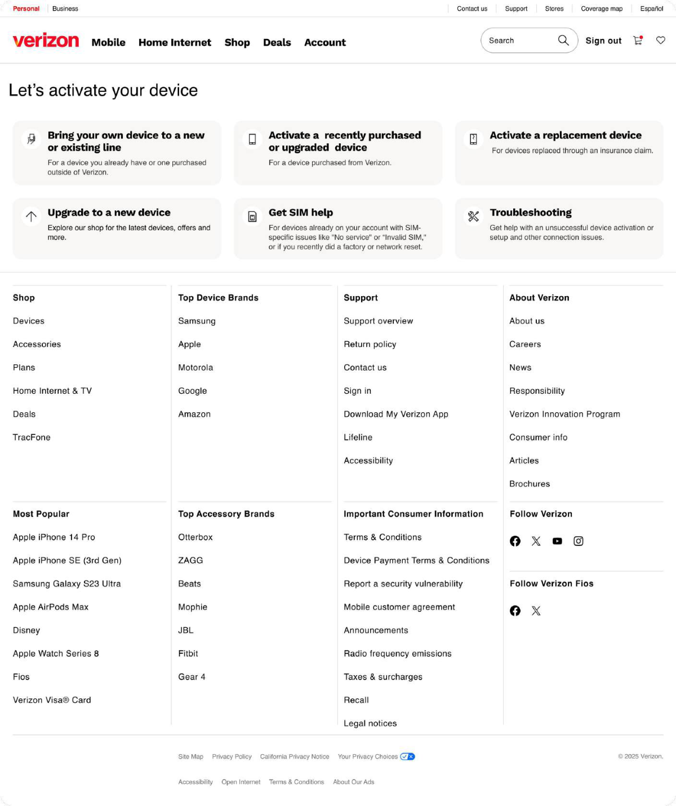
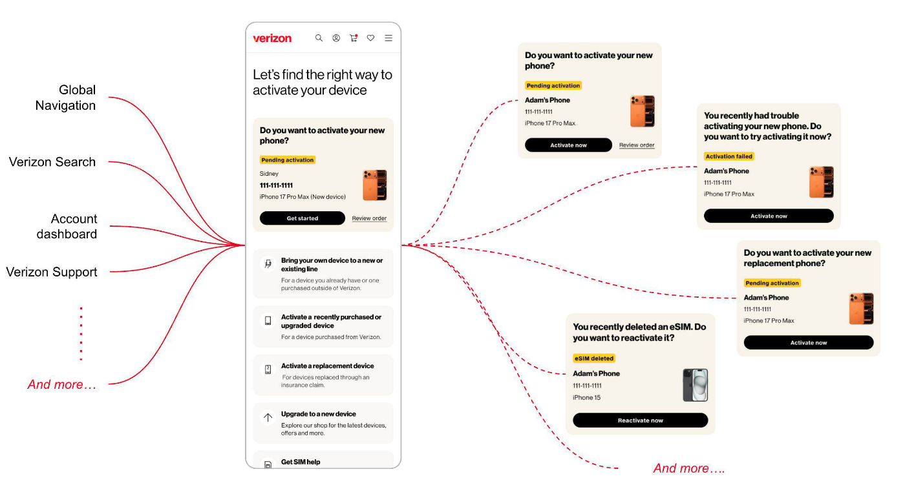

Mobile Quick Activation
Guiding customers to activate a new device in minutes — with plain language instead of technical jargon.

Customers should be guided into a short, clear activation flow — minimal steps, everyday language, and advice that fits their situation — so they can confidently set up a device on their own account.
“I need a clear path to activate my SIM without decoding technical jargon, and real-time updates on where my activation stands — so I can get connected without calling support.”
Customers describe their goal in plain words. The system speaks in scenarios. Nothing maps cleanly between the two — so people self-diagnose, pick the wrong path, and end up on the phone with support.
Get customers to a working phone faster by replacing a fragmented setup with one guided workflow — cutting dead ends and irrelevant paths so people can finish on their own, which lifts the experience and takes pressure off the call center.
Competitive analysis
User journey
Information architecture
Hi-fi designs
Prototype
Conclusion
People come to activation from four very different starting points — and every one of them wants to finish without picking up the phone.
Ten months of activation data (Dec 2024 – Sep 2025) showed how often self-service broke down — and how often that ended in a phone call.
- Most started on the website and found search overwhelming
- Technical terms (IMEI, eSIM, port-in) caused hesitation and drop-off
- People wanted a visible status, not a support number
Mapping the existing path for someone activating their own device on an existing line: eleven steps before the phone works, and several places to fall off.
We compared the activation experience against other carriers and against consumer-electronics setup flows, feature by feature.
Feature-level comparison across telecom and consumer-electronics setup experiences.
How the eSIM activation process differs across leading carriers.
The biggest friction sat in security: activating an unmapped eSIM through a QR code. Reordering the steps around a single hub let us fold verification into the flow instead of dead-ending on it.
Top: where the current flow stops. Bottom: the proposed path, with device mapping handled inside the hub.
“I want to activate my phone before work — no jargon, no waiting on hold.”
- Get connected in one sitting
- Know the activation worked
- Technical terms she doesn't recognize
- No visibility into whether it's working
One page that recognises who's arriving — signed in or not — and routes them straight to the right flow, with recommendations that match their situation instead of a generic checklist.


The interactive prototype is available on request.
Enter the password to view the working Quick Activation prototype.
Incorrect password. Try again.
Access granted. The prototype embed goes here.
Streamlined screens and clearer navigation cut friction across the activation journey. The Activation Hub gave customers one cohesive place to get a device working — and the numbers moved in both directions that matter: more people finishing on their own, fewer people calling.
Incorrect password. Try again.
Enter the password to view the full case study deck.